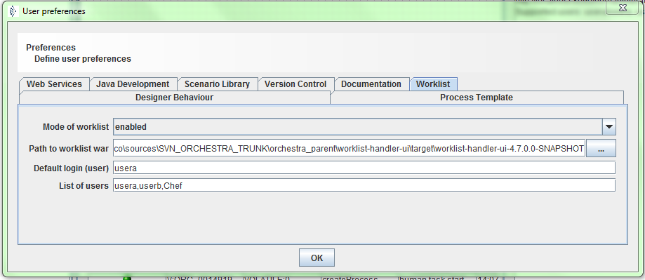
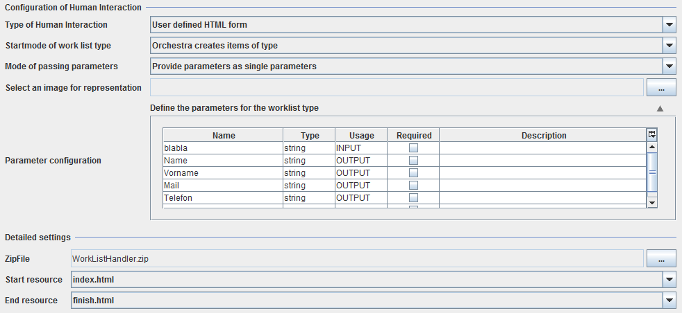
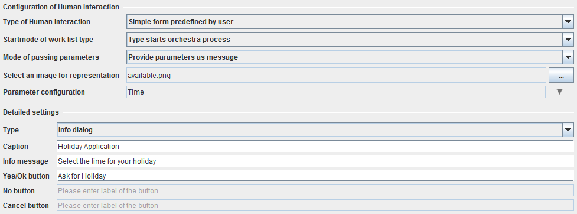
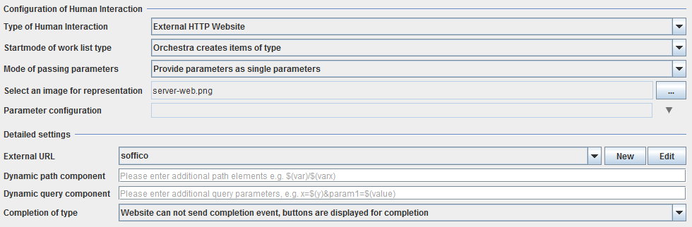
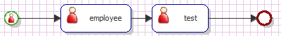
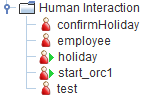

Human Interaction

Topic content
Concept
If you do not know anything about the work list server, read the introduction in Work List Handler first. A human interaction element is used for communicating with the work list server. With this scenario element, it is possible to either start an Orchestra process through a human or to give a task that needs to be done by a human to a certain employee or a group of employees. Human interaction elements offer the possibility to integrate tasks or decisions that need to made by persons in the Orchestra process and its technical work flow.
Enabling the Work List Handler in Orchestra Designer
The work list handler is not enabled standardly. If you want to enable it, go to Help->Preferences. The following dialog will open:

Preferences tab for configuring the work list handler
At first, switch the mode to enabled. In order to use the work list handler, you now need to enter the path to the sources in the second input field. You should not select the war file itself here but the application folder (the folder has the same name as the war file and is located in the same directory as the war file).
Now, you can specify the users that should be available. Enter them in a comma separated list in the input field "List of users" and then choose one of them as the default user. This user will be logged in automatically if you visit the work list UI. If you want to log in as another user, the password is always the same as the user name.
If you now start the test engine, in the messages box the URL of the work list UI is displayed. Copy it to a browser to open it.
Creation
Right click the "Human Interaction" folder on the left and select "Create". The dialog for configuring the element now opens.

Configuration dialog for a resource formula type
In the picture above you can see the configuration dialog. It depends on which type is selected, but the first configuration options always stay the same:
•Type of Human Interaction: Here you can select one of the three activation types that are available for human interaction, activation type means the way the type is displayed for the users: A simple form that has a configurable caption, information text and 1-3 buttons (type 1), a resource type that is created out of a HTML-form (type 2) or a external web site (type 3). Every type is explained clearer later.
•Start mode: Either the type is started by Orchestra, that means Orchestra creates items of this type during the process or the type is used for starting the Orchestra process.
•Mode of passing parameters: All parameters can be provided as a message, that means that the human interaction element wants the input parameters as a message and gives the output parameters as a message. If the type is a start type, the input parameters are passed to Orchestra as a message. By selecting this option, the corresponding message types are created or updated automatically. Look inside the "Message Types" folder on the left to examine how they look. If you select "Provide parameters as single parameters, all parameters are passed directly (for every parameter a variable with the matching value is existing).
•Label: This is only available for types that start a process. In the work list UI, the button caption can only have 20 characters if an image is set and 16 characters if no image is set. If the type name exceeds the number, the button caption will end with "..." and not the whole name is displayed. If you want to call your type with a long name, but give the button a shorter caption (or you want a different button caption as the type name), you can enter the desired caption here. If you try to enter more characters than allowed, a warning will appear and the last typed characters will be cut off. If you leave this empty, the name of the type will be used as the button caption.
•Representational image: For types that are start types or types that users can start the work list handler shows buttons with icons to the users. If they click a button, then they can provide the necessary information for starting and so on. The icon that is shown there can be selected here. The icon needs to be 30x30px or smaller, if a bigger picture is being selected here, it will be scaled down.
•Parameter configuration: Clicking here opens the table with the parameters as shown in the image above. Some of the parameters are parsed from the types, this will be explained for each type later. It is also possible to define own parameters here, especially interesting for the simple type. A type that starts Orchestra only allows input parameters, these are the parameters that are given to Orchestra for starting, others do not make sense in this case.
Resource Form Type (User defined HTML Form)
The configuration dialog for this type is shown in the image above. You can see in the dialog that a zip-File with the resources for this type is uploaded there. In this zip-File, there can be various HTML- and image-files for displaying the type. Select the root resource and the finish resource out of these resources then. The root resource is the one that is shown when a user clicks on an item of that type or wants to start that type. The finish resource is shown after completing a item on success or after starting the process.
For creating a HTML-form that fits your needs, be aware of the following: The parser checks all HTML-tags for "input"-tags. It takes the name-attribute of every field and creates an output-parameter automatically. It also checks for input parameters that can be declared with the following convention: $(parametername). This construct will be replaced with the value of the input parameter. The value of output parameters (or input parameters in case of a start process type) will be passed to the process. The HTML-form can also complete the item (or start the type) by itself. For this case, a form-tag with the method post needs the attribute action="$(INT:RESPONSE.URL)" an a input-tag from type hidden with the name "RESPONSE.ID" and the value "$(INT:RESPONSE.ID)". If the parser does not find these parameters, the work list handler will show buttons for completing the type, but in this case the value of the input fields can not be passed on. Use the following example to create a form that can pass parameters:
<html>
<head>
<meta content="text/html; charset=UTF-8" http-equiv="content-type"/>
</head>
<body><img alt="Orchestra" src="Orchestra_logo.png">
<h1>Mitarbeiterdaten eingeben:</h1>
<h2>$(heading2)</h2>
<form method="POST" action="$(INT:RESPONSE.URL)" name="TheFormular">
<input value="$(INT:RESPONSE.ID)" name="RESPONSE.ID" type="hidden"/>
<table border="0" width="100%">
<tbody>
<tr>
<td style="width: 244px;">Name</td>
<td style="width: 1042px;"><input name="Surame" type="text"><br>
</td>
</tr>
<tr>
<td>Vorname</td>
<td><input name="Name" type="text"><br>
</td>
</tr>
<tr>
<td>Mail</td>
<td><input name="Mail" type="text"><br>
</td>
</tr>
<tr>
<td>Telefonnumer</td>
<td><input name="Telephone" type="text"><br>
</td>
</tr>
</tbody>
</table>
<br>
<button value="SUBMIT" formmethod="post" type="submit" name="SUBMIT">Submit</button>
</form>
</body>
</html>
This form has the input parameter "heading2" and the output parameters "Surname", "Name", "Mail", "Telephone" with a button "Submit" to complete the item and pass the parameters to the process.
Simple form type

Configuration dialog for a simple form type
A simple form type is just like a small dialog. It has a caption, an information text and some buttons. depending on which type is selected, 1-3 buttons can be configured. The first button is always the button that completes the item on success. The second one is used for aborting the item (completion on failure) and the third one is like a cancel button: the item is not finished at all, but the item is not displayed any more. You can also use the convention for declaring input parameters here: use $(parametername) to define a parameter with the name parametername. If you need output parameters, create a new parameter in the table. For each output parameter (or input parameter for start types) an input text field is shown where the user can enter a value that is passed to the process then.
External website

Configuration dialog for an external website type
External website means that a browser frame is displayed with the URL that is defined in the configuration. Use the environment entries to define the base URL you need. Then you can define some dynamic components that are added to the URL. Path or query components that should be filled by input parameters can be defined with $(parametername) as in the other types. If you create your own website that can complete items by itself (by using the web service or the completion servlet), select "Website can send completion event". In that case, the work list UI does not display buttons for completion as it would be in the other case.
When using an external website, it is necessary that the website informs orchestra about a successful completion of the HTML page. This is done by sending a HTTP-Post-Request back to the orchestra worklist handler. This Post-Request must be sent to a specific URL and requires a "security token" that authenticates the external request against orchestra. As a mechanism for passing this parameters to the external web site, query parameters or dynamic path components can be used. Within this components the following parameters are supported:
$(INT:RESPONSE.URL) - This parameter is replaced by the url-encoded, absolute url that must be used to send orchestra the HTTP-Post request from the external page
$(INT:RESPONSE.ID) - This parameter is replaced by a security token, that uniquely identifies the invocation of the external web site. Only when this value is passed back to orchestra ( with the parameter Name RESPONSE.ID) a web pages is allowed to start a human interaction workflow
Example:
Assume an external web page expects that the parameters are passed as query-parameters exturl and extid. If you want to configure this, please add the following to the dynamic query parameter field:
exturl=$(INT:RESPONSE.URL)&extid=$(INT:RESPONSE.ID)
Using human interaction components in the process model
After defining a human interaction element, you can add it to the process model. For types that Orchestra creates items from, use the human interaction process element in the category activity. For types that start a process, use the human start event. The following picture shows a process model with both possibilities. For activities, the name of the human interaction is displayed in the scenario element box.

Process model with human interaction elements
If you edit the start event and look at the section "Process variables", you can assign the parameters that come from the start event to process variables. If you chose the message option, you find a RESPONSE_PARAMETERS message here, otherwise all parameters can be assigned one by one. Another variable that is available here is CREDENTIAL: it is the credential name of the credential that started the process, useful if an item should be sent back to it or for checking the origin of a process start. For the activity element, you can not find the CREDENTIAL here, but also the output parameters either as a message or single. For this element you also have to check the "Parameter assignment" section. For the message option, you need to define the REQUEST_PARAMETERS message here or alternatively the value of every input parameter by its own. Apart from that, the Priority and the target Credential need to be defined here. What is also necessary, is the parameter ItemName. This name will be used in the work list handler to show the user his items in the menu. The server adds a "_" together with a number to the here configured name automatically. Apart from that, an activity element has the two output variables RESULTCODE and RESULT_LABEL. The value of this parameters depends on what the user did to complete the element. If he clicked on the first button (Yes/Ok button for simple forms, submit button for resource forms and Finish button for external websites), the result code will be 0 and the result label is the string on the clicked button. For resource forms, this will always be "SUBMIT". The second button (No button for simple forms, Cancel button for external websites) has the result code 1 and the third button (Cancel button for simple forms) the result code 2.
For the activity element you can also define in the "Human Interaction" section how the item is started. It is possible that the process waits for the completion and so stops the execution until the response arrives or that the process just gives the item to the server and then continues immediately. The second option can be used for example if a info message about the state of the process should be published to a user.
Understanding human interaction elements in the scenario element tree

Scenario element tree for human interaction elements
You can see an example for a scenario element tree in the picture above. There are two different icons: A human and a human with a green rectangle. The human with the rectangle ("play symbol") signalizes that this human interaction is used for starting processes, the human without the rectangle signalizes that the Orchestra process will create elements of this human interaction .
See also